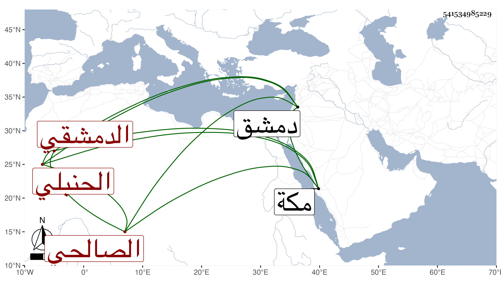

0902Sakhawi.DawLamic.ITO20230111-ara1.EIS1600.541534985229
Biography ID: 541534985229
أحمد بن عبد الكريم بن محمد بن محمد بن عبادة بن عبد الغني الشهاب بن النجم ابن الشمس الدمشقي الصالحي الحنبلي المذكور أبوه وعماه أمين الدين محمد وشهاب الدين أحمد ، ويعرف كسلفه بابن عبادة . كان كل من جده وأحد أولاده الشهاب حنبليا وخالفه ولداه الآخران فتشفع الأمين وتحنف والد صاحب الترجمة ونشأ هذا خطيبا وولي قضاء الحنابلة بدمشق كجده وعمه الشهاب وذلك بعد صرف البرهان بن مفلح فدام قليلا ثم صرف به أيضا ، وعرض له ضربان في رجليه فانقطع به مدة وسافر لمكة فجاور بها حتى مات في شعبان سنة إحدى وتسعين وكان معه ولده من ابنة ابن الدقاق وزوجه ابنة خاله محمد بن عيسى القاري .
